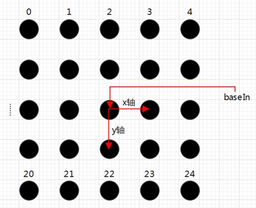

|
类型 |
标定 |
|
描述 |
功能与ZV_CalGetPointsMap指令类似，区别在于： 别名：ZV_CalGetPtsMapBase |
|
语法 |
ZV_CalGetPointsMapBase(pptsIn,baseIn,ppts,wpts,dis)
参数： pptsIn：ZVOBJECT类型，输入的像素坐标，矩阵类型N行2列 baseIn：ZVOBJECT类型，输入基准坐标系，单通道3x2矩阵，分别为原点，x轴点，y轴点，均大于0 ppts：ZVOBJECT类型，输出参数，排好序的像素坐标，矩阵类型N行2列 wpts：ZVOBJECT类型，输出参数，排好序的世界坐标，矩阵类型N行2列 dis：水平或垂直两相邻点的实际距离，dis为一个数值，单位可以是(毫米mm)，(厘米cm)，(分米dm)，(米m)，大于0 输出点的排序方式如下图所示：  |
|
适用控制器 |
支持ZV功能或者5系列以上的控制器 |
|
例子 |
ZVOBJECT img,pts,base_in,base_out ZV_ImgRead(img,"tool3.jpg",0) '读取图片 ZV_CalGetScaPoints(img,pts,128,0,500,5000) '提取标定板圆心坐标 TABLE(0,361,362,482,362,361,482) '写入输入坐标系数据 ZV_MatGenData(base_in,3,2,0) '生成输入坐标系矩阵 ZV_CalGetBase(pts,base_in,base_out) '获取基准坐标系
ZVOBJECT img_pts,world_pts ZV_CalGetPointsMapBase(pts,base_out,img_pts,world_pts,10) '从点集pts中计算对应点的像素坐标和世界坐标 ZV_MatGetRow(img_pts,0,2,0) '获取第一个点像素坐标 ZV_MatGetRow(world_pts,0,2,10) '获取第一个点世界坐标 ?"第一个点像素坐标:",TABLE(0),TABLE(1) ?"第一个点世界坐标:",TABLE(10),TABLE(11) |